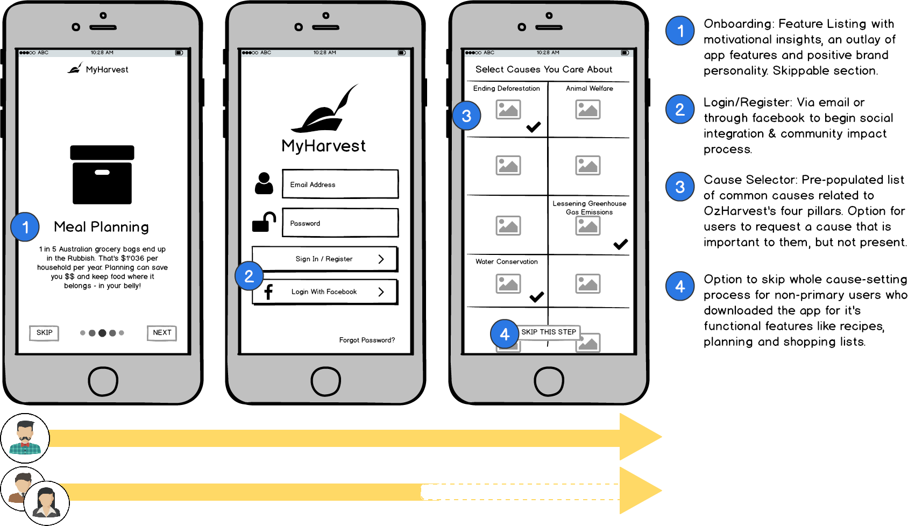
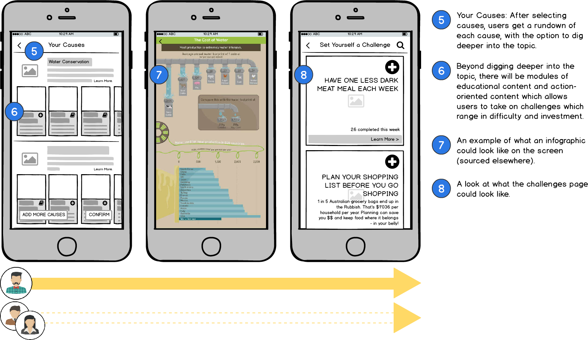
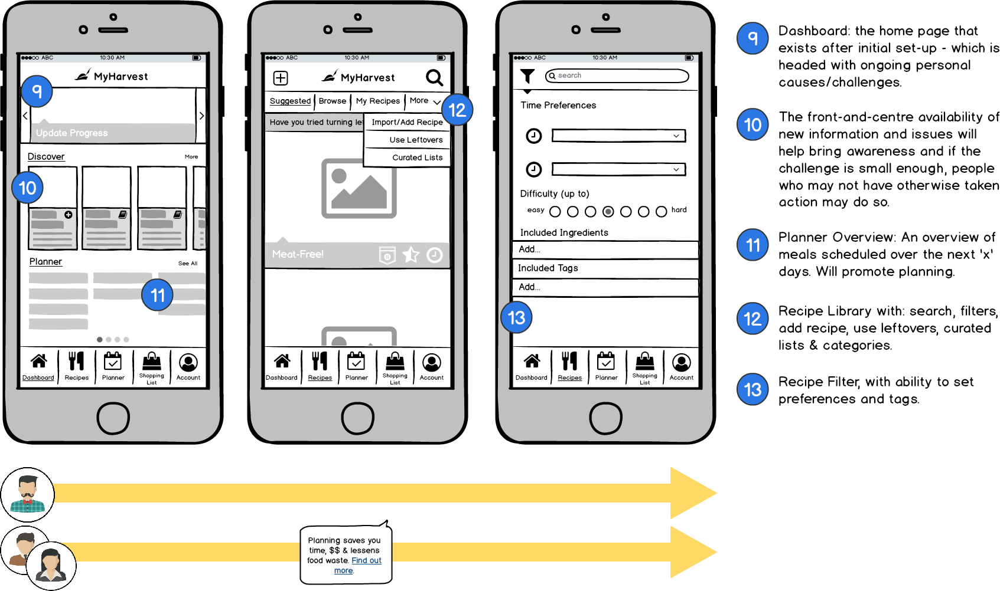
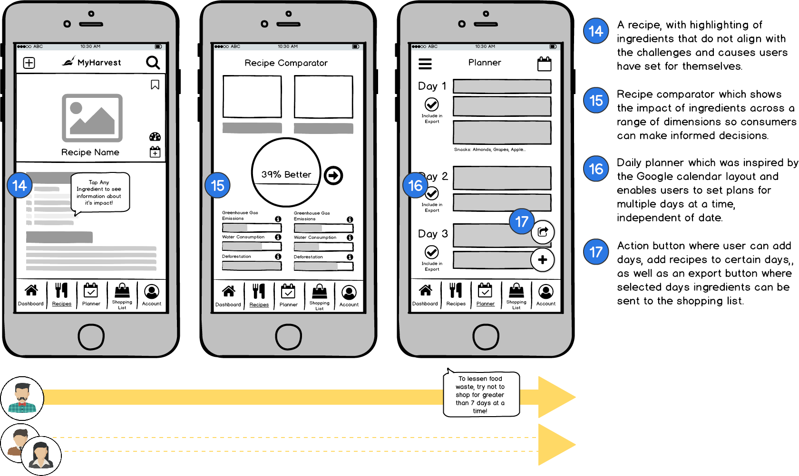
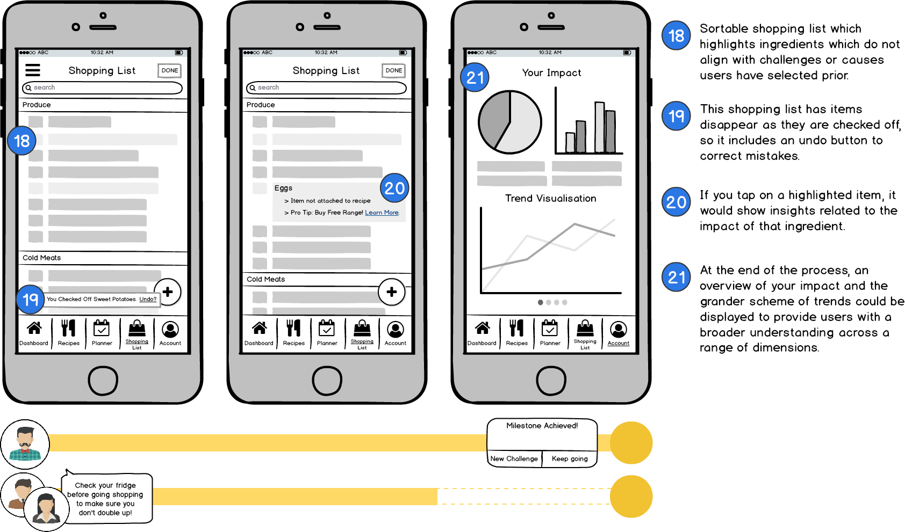
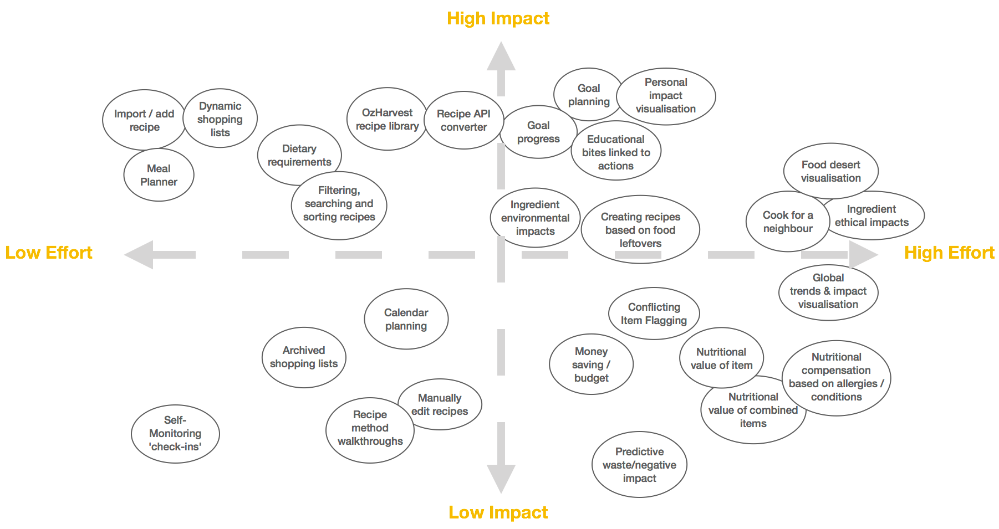
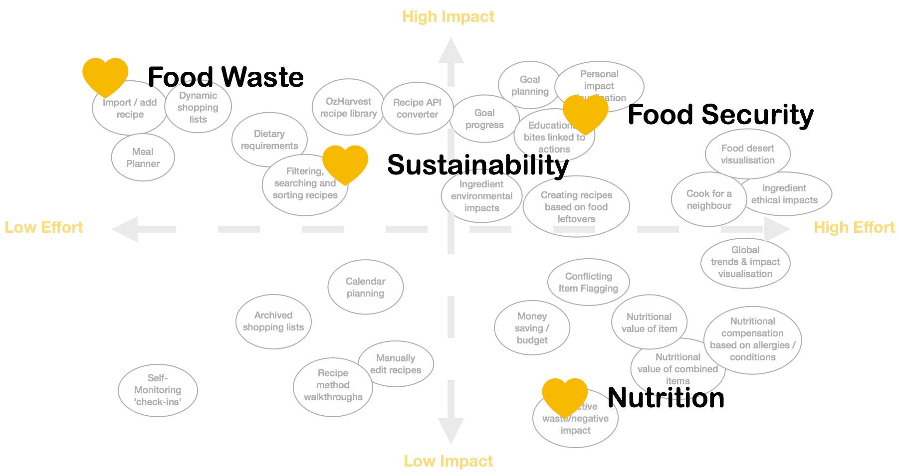

{kind=link}
{kind=link}
{kind=link}
{kind=link}





A meal planning app to help people lessen their food consumption footprint via planning facilitation, education, goal setting and motivational insights.
UX/UI Design | Service | Mobile
OzHarvest is the first perishable food rescue organisation in Australia; collecting excess quality food from
donors and delivering it, direct and free of charge, to more than one thousand charities across the country
as well as hosting their own ‘take what you need, give what you can’ supermarket.
Now, OzHarvest wants to branch out from food rescue and leverage technology to educate people from
all walks of life on nutrition, food waste, food security and sustainability, then move them to action!
(Fictitious Brief)
2 week, research-led, collaborative sprint (Student Project)
Anthony Drane
Alastair Floyd
Harriet Stockley
Surveys, User Interviews, Affinity Mapping, Personas, Market Analysis, Concept-Mapping, Feature Prioritisation, Sketching, Design Studio, User Walkthroughs, User Journeys, Wire-framing & Requirements mapping.

Initially, our team approached the sprint by interpreting the brief, brainstorming relevant UX methodologies and
determining objectives for the two weeks. We also wanted to define and explore our current assumptions around
OzHarvest’s Four Pillars: food waste, nutrition, food security & sustainability.
This lead us to develop
upfront goals:
RESEARCH & SYNTHESIS
An analysis of OzHarvest’s web content exposed a broader framework within which our solution would have to fit. We discovered their mission statement for education is ‘to increase community connectedness, improve self-worth and confidence,’ as well as getting volunteers to engage with their charitable programmes. Existing education programmes exist in the form of on-site workshops on nutrition, low-cost meals, budgeting, reading food labels, food storage & shopping/cooking tips. Finally, they have an existing framework of advice, recipes, research and statistics, centreing around food-waste, which provided a framework to validate our ideas against throughout our design process.
Buy What You Need
☻ Check what food you already have
☻ Plan your meals
☻ Write + Shop to a list
☻ Don’t buy too much
at once
Eat What You Buy
☻ Check the food in your fridge often
☻ Look at dates, move near-expiry items to front
☻ ‘Wasty Recipes’
– Love your leftovers
☻ Freeze what you don’t need
Statistics & Facts
○ 1 in 5 shopping bags or $3'800 per household ends up in the bin
○ >644'000 people receive food relief:
1/3 are children
○ Food Waste costs the economy $20bn AUD/year
Wanting to understand the elements of successful digital solutions in the landscape of behaviour change,
ethical education and motivation, we took a detailed look at the features and functions of various popular
products and services. This investigation told us:
Ozharvest’s ambitious concern of significantly lessening world hunger factors in the entirety of the population,
so it was key to research a vast cross-section of people up front. We hypothesised that uncovering behaviours
and actions with a survey would provide a platform from which to dig into motivations and beliefs with face-to-face
interviews (which we conducted guerrilla style; approaching strangers of the public).
Due to the sprint
duration, we narrowed our questions to most people’s main meal: dinner. We wanted to learn people’s habits
around shopping, consumption, food waste and the factors dictating their purchases, including any environmental
or ethical considerations. We grouped this qualitative data into insights, using over 200 post-its (or one
tree).
RESEARCH SYNTHESIS
Many plan meals and make shopping lists but still waste food. They: plan insufficiently, leave the grocery store with more than they planned, do not accurately assess quantities & skip planned meals (instead eating food of convenience, impulse or due to change plans).
Facilitate the planning and shopping experience with accessibility, efficiency, accuracy and low time/energy investment. This should improve consumption efficiency & lessen food waste.
People widely hold conflicting beliefs around food waste; simultaneously holding guilt and acceptance of a cultural norm.
Negative emotions are poor drivers of behaviour change; we need to address food waste with positive motivators like money saved and providing positive feedback.
Most are not confident that their shopping and eating choices are right or optimal both for health and sustainability. Due to:
Provide simple, actionable, trustworthy and provable information to people, then they will be more likely to absorb such information, remember it and act upon it. Ingest this into the experience and link it with simple and easy-to-implement calls to action.
The majority of participant’s listed one or more way they attempt to minimize their consumption footprint, yet do not feel they are doing all they can.
Most people are on board with OzHarvest’s four pillars to some extent. We could leverage this to help them achieve pre-existing goals as well as introduce ways for them expand their impact and discover new goals.
Some people had made behavioural changes in the direction of OzHarvest’s four pillars. Their stories expressed that they received inspiration, information, organisation and occasionally feedback.
If we can provide a variety of motivators, simplifiers and calls to action, we will be more likely to change behaviour.
We used these insights to generate three persona prototypes to act as sounding boards for hypotheses & potential solutions, and to help us to prioritize features.
Overwhelmed Idealist
"I want to make a difference, but there's too much information & I don't know what's right"
○ Has ethical & environmental concerns, but doesn't know how to fully live them.
○ Feels good when makng
future-conscious choices.
○ Doesn't trust the reliability of information re: nutrition & ethics.
Needs:
○ To believe in the information he's accessing.
○ To have
assistance making ethical & healthy choices.
○ To get feedback on the impact he's making.
○ To be involved
in a like-minded community.

Distracted Fast-Laner
"I believe I care, but I'm too busy to make decisions about my food choices"
○ Time Poor: Doesn't plan ahead much or is incomplete in planning.
○ Makes uninformed, unaware or emotional
decisions when shopping.
○ Accepts food waste as normal (though dissappointing)
Needs:
○ To have a lot of assistance, accuracy and efficiency in
planning.
○ To have all pertinent information readily accessible.
○ To understand and discover resonating values,
how to live them & their impact.
Family Shopper & Cook
"Shopping & food preparation is a necessity, but I try to keep it basic, quick and efficient"
○ Time & Money Stretched.
○ Plans ahead incompletely, or on the spot, but dislikes waste.
○ Tailors
meals to multiple people's preferences & needs; Family is priority.
Needs:
○ To have clear, concise & easy choices.
○ To have the
ability to plan on-the-go & store ideas.
○ To be able to share & pass responsibilities with others.
○ To ensure his choices meet family needs & budget.
BJ Fogg’s behaviour model indicates that three elements must align at the same moment for a behaviour to occur:
a value (Motivation), the accessibility of outcome (Ability) and a call to action (Trigger).
With a
clear overlap between our findings, the Fogg behaviour model and the goal of the brief, we decided to create
three separate hypotheses which each reflect a single element of the equation and enable ideation which intrinsically
compels the behaviour change OzHarvest desires.
Proposition: Advance planning and shopping for meals increases consumption
efficiency.
If we support people in planning, shopping and meal preparation, then they will waste less food because
they will be more likely to buy and use only what they know they need.
Proposition: People are more likely to achieve their goals when they express
them and receive support.
If we encourage users to consider their goals and values around food, then we will be able to support those goals through product features because users need relevant interactions that reinforce their objectives.
Proposition: People repeat engagement with experiences that have rewarding
outcomes.
If we reveal delightful and unexpected insights based on the effects of user action, then solution utilisation will increase because it will engender value attached to their actions and deepen their knowledge and investment.
DESIGN & ITERATION
“I use an app when I’m feeling inspired”
– Tom (interviewee)
At this point we began to envision features for a mobile meal-planning solution because of the convenience and portability required for day-to-day adoption. The comparative analysis showed us that existing solutions do not cohesively combine habit facilitation, knowledge expansion AND shopping support; so our conception at the time included:
Solution Statement: Our idea to address OzHarvest’s problem is to create an app which enables people to plan & purchase food efficiently, as well as learn about the effects of their choices. The main groups of people who will benefit from our solution will be :the time/money poor and those with personal concerns regarding their consumption.
At this point, the “Overwhelmed Idealist” emerged as the primary persona, as it meant preaching to the proverbial choir. We believed that by fuelling the knowledge and facilitating the goals of Idealists, we would cover the core functionality for all three personas in the consumption space. From here, we could provide simpler, less feature heavy pathways to meet the more basic needs of the other personas with a vision to converting them into idealists later. We would do this by decreasing the difficulty of living their values, giving them encouragement and placing delightful & incremental triggers throughout the process.
With a sprint goal to generate a Minimum Viable Product (MVP) concept, we brainstormed feature ideas related to our hypotheses and mapped them together on an impact-effort matrix to help constrain ourselves. We gave more weight to ideas which supported behaviour change through improving user ability primarily, followed by those which increased motivation or triggers from the BJ Fogg Model.
 The outcome was a clustering of features that related to OzHarvest’s existing mission – food waste & sustainability – in the high impact quadrants. Although these became the focus for our proposal of Minimum Viable Product (MVP), we decided to leave doors open for food security and advanced nutrition in our ideation for future scalability.
After conducting a design studio, further sketching and talking through our ideas we settled on core screens and took them to potential users for concept walkthroughs. Users believed:
THE OUTCOME
OzHarvest’s goal of educating and moving people to action regarding food waste, sustainability, security and nutrition, lead us to research and discover an array of anchors holding people back from living such values. We learned that people want to achieve better outcomes across these pillars, but need help taking action, discerning useful information and getting reliable positive reinforcement. As such, we designed a concept for a meal-planning app which facilitates the shopping process from deciding what to eat to shopping in-store to cooking. It goes beyond other goal-setting and meal-planning apps in the marketplace by being a single-source stop for education, scheduling, impact insights and goal tracking.
We decided to create “happy-path” wire-flows and stories tied to the “Idealist” and “Fast-Laner” personas to ensure they were able to only invest the time and energy that matches the value return they desire from the app in the early stages of adoption. This meant that core features like planning, recipe libraries, search & filtering, and shopping lists would be front-and-centre while secondary features like causes, goal setting and impact visualization would be less visible or at least optional. (if below image doesn't display correctly, please resize your browser or turn your mobile device on the side).
To help OzHarvest better understand the investment and requirements to make our solution functional, we developed a function map that details the supporting infrastructure necessary to manage the application at a high level.
To get buy-in for a fresh face in the marketplace, we considered leveraging existing OzHarvest partnerships and exposure to market our solution. With big chains as the primary locations for grocery shopping and OzHarvest’s partnership with Woolworths, we took some primary functionality from the app and designed a digital kiosk which users could quickly use to pick a few recipe’s and generate a printed shopping list with in-store products.
As a team we determined high-level next steps for the hypothetical situation of the projects continuance:
RETROSPECTIVE
I wasn’t aware of OzHarvest before being handed this fictional brief, but quickly began noticing the presence of their van’s across Sydney’s CBD and appreciating their presence. This assignment offered an opportunity to practice research skills, interview people in vox-pop style and work together with a team from diverse backgrounds. Beyond the core skills developed during the project, I appreciated learning about the utility of sophisticated concept maps in context of designing a solution from Alastair. I also recognised a deeper aptitude in myself than expected for elaborating on people’s ideas and facilitating debates between team-members for mutually beneficial outcomes. Lastly, it was invaluable to learn the importance of creating a roadmap upfront which constrains the scope to something feasible, given the project length.
{kind=link}
{kind=link}